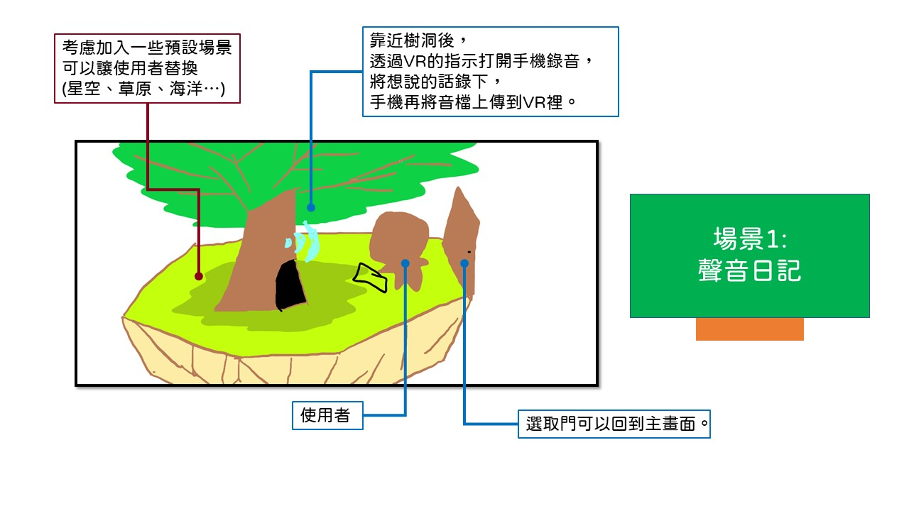
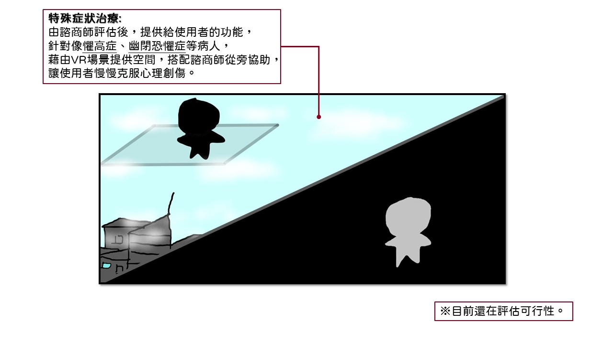
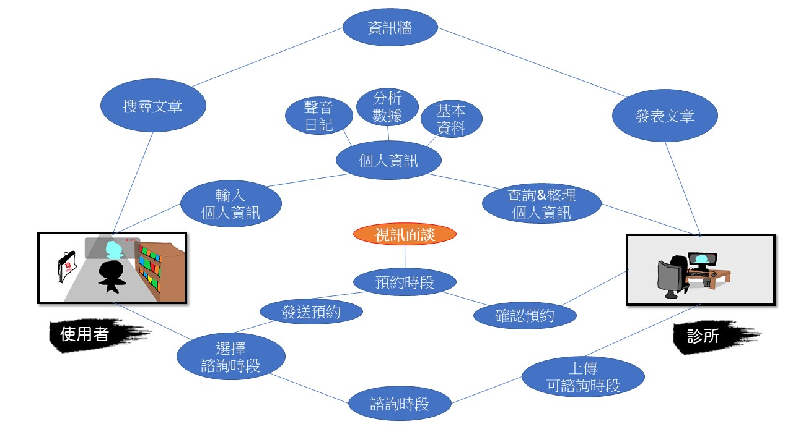

發想理念
隨著科技日新月異，我們的生活和過往相比出現了極大的變化，無論是物質上的需求還是心理上的滿足都是，然而相對的，這也衍生出了過往不曾出現的問題，包括了環境變遷、社會結構改變，以及，個人的心理健康。
心理健康在近幾年已經是各個國家都面臨到的問題，再加上疫情的關係，這些被壓抑的的情感不只對個人造成傷害，也開始蔓延到生活形成社會問題。
那麼，我們要設計一個心理輔導的程式嗎？我認為這並不是一個好方法，人的心理現象是一門纖細的專業領域，如果隨意以外行人的角度，或是不成熟的科技介入輔導行為，萬一因此產生更嚴重的負面情感，我們沒有能力負責也承擔不起後果。
話雖如此，我們還是希望能為心理健康貢獻一份心力，儘管沒有心理方面的知識，但我們有資訊方面的能力，希望能夠藉由這個程式，引導更多人尋求專業人士的協助。
三大特色
結合數據衡量心理狀況，讓當事人、陪伴者與心理諮商師有一個可以參考的客觀資料。
減少移動的時間成本，讓需求者在家裡就能尋求協助，也可以顧及個人隱私。
透過VR為使用者營造沉浸感，藉此讓使用者呈現更自然的行為模式，增進溝通成效。
※參考SDG03『健康』、SDG11『永續城鄉』、SDG17『多元夥伴』。
目標客群
-
覺得自己陷入負面情緒的人
心理問題難以被察覺的其中一個原因，就是有些有病的都覺得自己沒病，死愛面子不去尋求治療，透過這個程式可以讓使用者更清楚自己的狀況，並在幾乎不接觸到別人的情況下尋求諮商師的協助。
-
合作的診所或醫院
能不能合作我不確定，但我希望能實作出視訊與資料統整的功能，提供給商家(診所)使用。
預想功能
-
聲音日記
當你有想說的話卻又不敢與人訴說時，可以藉由VR的引導打開手機的錄音功能，並將錄音內容保存在VR內，可以選擇「不公開」，或是「可以與心理諮商師分享」。
-
資訊牆
這個功能是希望能讓合作的診所或醫院，有個空間能放上他們的診療經驗與學術文章，一方面可以營造一個讓心理諮商師分享交流的平台，另一方面，使用者也可以在這裡找到更精確，來源更可靠的心理資訊。
-
心理量表
根據使用者選擇的特徵(失眠、焦慮、生活狀況、飲食...)提供對應的心理量表填寫。
-
偵測身體數值
人的身體反應有時會呈現一些心理資訊，運用人臉辨識偵測臉部表情，以及外部感測器偵測心跳、體溫、手掌出汗程度等，再透過使用者的生活習慣與心理量表的回報，整理出一份心理健康的數據，提供給心理諮商師與使用者參考。
-
諮商服務
可以與心理諮商師約時間面談的系統，詳細功能再用圖片說明。
圖片範例
簡單說明使用者在VR內會體驗到的畫面，但VR的東西要用文字解釋有點困難，所以我用一些自製的繪圖來輔助說明(如果圖片太小，下面有PPT可以下載)：
在構思的過程中，我想到了之前曾經被退回的伊索寓言RPG，童話純樸與單純的背景設定 ，我認為相當適合結合心理方面的主題，因此在畫面呈現上有做一些參考。
-
平面圖
整個程式依據主要的四個功能，分成四個場域。
-
主畫面
使用者進入程式後的第一個場景，透過四扇門前往四個不同的場域(類似目錄)。
-
場域一：聲音日記
參考童話故事『國王的驢耳朵』，用途近似情緒垃圾桶，將想說但不太能說的話留在這裡。
 -
場域二：資料牆
參考童話故事『金銀斧頭』，讓使用者搜尋文章，也讓諮商師可以發布他們的專欄文章或診療經驗。
-
場域三：心理量表&身體偵測
參考童話故事『烏鴉喝水』，提供一些客觀的資料和數據給諮商師。
-
場域四：諮商室
想不到可以參考什麼童話故事，讓使用者預約諮商時間、檢視個人資訊和進行視訊諮商的地點。
-
使用案例圖(Use Case)
使用者與診所之間的使用關係，我不確定是不是這樣畫，不過看起來滿順的。
 -
感測器圖例
目前構想是長這樣，技術的部份應該是可以實現，但成效如何不確定。

 (點擊圖片下載)
(點擊圖片下載)